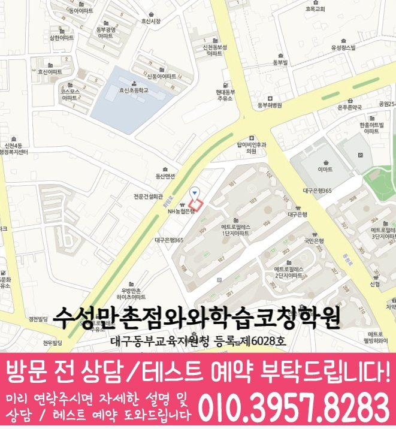

30초 핵심 안내
범어동 수학학원 선택 전 확인할 기준
범어동 수학학원에서는 범어동 초·중·고 학생의 학년 단계와 풀이 과정과 계산 오류의 구분을 먼저 살펴봅니다. 센터 위치는 대구 수성구 화랑로8길 11-11 7층이며, 제공된 학교 참고 정보는 동중이며 수업 시간·교습비·반 편성은 상담에서 다시 확인해야 합니다.
Math Learning Guide
범어동 수학학원 선택 전 초·중·고 학생의 학교 진도, 수학 상태, 개념 이해와 문제 적용의 연결, 통학과 상담 기준을 확인하세요.
30초 핵심 안내
범어동 수학학원에서는 범어동 초·중·고 학생의 학년 단계와 풀이 과정과 계산 오류의 구분을 먼저 살펴봅니다. 센터 위치는 대구 수성구 화랑로8길 11-11 7층이며, 제공된 학교 참고 정보는 동중이며 수업 시간·교습비·반 편성은 상담에서 다시 확인해야 합니다.
수업 안내 이미지

센터 위치 안내

구체적으로, 대구 수성구 범어동에서 수학학원을 알아보는 출발점은 프로그램 이름이 아니라 학습자의 현재 풀이 행동입니다. 특히 이전 내용과 연결해야 할 때에 나타나는 행동을 조건 읽기와 표시에 관한 질문으로 바꾸면 상담 답변을 비교하기 쉬워집니다. 설명을 위해 ‘이전 내용과 연결해야 할 때, 문제에 제시된 조건을 표시하지 않고 바로 계산을 시작하는 학생’이라는 가상 고민 유형을 정했습니다. ‘개별관리반’을 살펴볼 때는 현재 개설 또는 적용 여부와 대상, 실제 진행 단계를 나누어 확인해야 하며 명칭만으로 수업 효과를 판단하지 않습니다. 범어동 안내 주소는 ‘대구 수성구 화랑로8길 11-11 7층’입니다. 우선, 범어동에서 방문을 준비할 때 실제 이동 시간과 건물 출입 방식은 주소에서 추정하지 말고 학부모가 별도로 확인할 항목입니다. 사실과 추정을 나눌 때, 범어동에서 영어·수학을 함께 비교하려면 두 과목의 개설 여부와 진단·과제 방식을 각각 확인할 필요가 있습니다. 확인된 조건만 놓고 보면, 본문에서는 문제의 조건을 읽고 표시하는 과정에서 보이는 행동을 기준으로 학습 방향과 선택 항목을 단계별로 정리합니다.
대구 수성구 범어동에서 수업을 이어 가려면 계획의 양보다 꾸준히 방문하고 복습할 수 있는지가 중요합니다. 대구 수성구 화랑로8길 11-11 7층을 기준으로 이동 시간을 먼저 살핍니다. 초4·초5·초6·중1·중2·중3·고1 범위에서 수학 우선순위를 정하는 편이 좋습니다.
범어동 학교별 진도와 평가 방식은 같지 않으므로 동중 등 제공 학교 정보는 상담 준비의 출발점으로만 사용합니다. 실제 계획은 학생이 사용하는 교재, 시험 범위, 오답 기록을 확인한 뒤 결정합니다.
와와학습코칭센터 수성만촌점의 제공 자료에는 대구동부교육지원청 등록 제6028호가 표시되어 있습니다. 범어동 학부모는 이 정보와 교습비 자료를 확인한 뒤 수업 시간뿐 아니라 과제 확인과 재학습 방식까지 질문하는 편이 좋습니다.
범어동 수학학원 상담 전에 학부모가 정할 핵심은 조건 읽기와 표시에 관한 점검 기준 한 가지입니다. 문제의 앞뒤 조건을 읽고 표시하는 장면을 살펴본 뒤 시작 행동, 멈춘 위치, 재시도를 짧게 나눠 기록합니다. 특히, 설명을 들을 때는 같은 기준을 수업에서도 사용할 수 있는지와 완료 판단을 무엇으로 하는지 각각 물어봅니다. 특히, 구체적인 답을 듣기 전에는 적합한 수업 방식이나 결과를 미리 판단하지 않도록 합니다.
문제의 조건을 읽고 표시하는 과정을 점검하려면 틀린 문제를 개념 이해, 조건 누락, 적용 순서, 계산·표현의 네 갈래로 나누어 볼 수 있습니다. 최근 문항에서 문제의 앞뒤 조건을 읽고 표시하는 장면을 살피고 학습자가 멈춘 이유를 설명할 수 있는지 점검합니다. 이 가상 학생 유형을 살필 때는 맞힌 문항에서도 풀이 근거를 이해한 것인지 답만 고른 것인지 구분합니다.
결정을 내리기 전에, 관리 방식을 비교할 때는 과제→오류 표시→재풀이→다음 범위의 연결을 먼저 살펴봅니다. 여기서, 범어동 상담에서는 각 과정의 담당과 점검 시점, 학생 또는 학부모가 볼 수 있는 기록의 유무를 직접 물어야 합니다. 조건 읽기와 표시에 관한 피드백이 있다면 자녀가 다시 확인할 행동까지 구체적인지 봅니다. 덧붙여, 문의 과정에서 듣지 않은 관리 절차는 사실로 적지 않습니다.
‘이전 내용과 연결해야 할 때, 문제에 제시된 조건을 표시하지 않고 바로 계산을 시작하는 학생’이라는 가상 유형은 현재 이해 확인, 핵심 개념 설명, 짧은 예제, 독립 풀이, 오류 정리, 재확인의 순서로 살펴볼 수 있습니다. 결정을 내리기 전에, 여러 단원을 한꺼번에 바꾸지 말고 필요한 과정 하나와 완료 기준 하나를 먼저 정합니다. 아울러, 재확인에서는 조건의 위치나 수치가 달라져도 필요한 조건을 골라 새 식을 세우는지 살핀 뒤 이어 갈 범위를 고릅니다. 그 과정에서, 상담 답변에는 각 과정의 종료 기준을 표시해 둡니다.
문의 항목을 나눌 때, 위치 확인에는 세 가지 질문을 사용할 수 있는 방법이 있습니다. 아울러, 주소가 안내와 같은지, 실제 경로는 어떤지, 건물 출입 조건은 무엇인지 보호자가 각각 확인합니다. 지역 표기는 ‘대구 수성구 범어동’ 범위를 넘기지 않습니다. 그 과정에서, 범어동 페이지에 적힌 ‘동중’을 실제 재원 관계나 제휴의 근거로 해석하지 말고 학습 범위를 질문할 때만 사용합니다.
‘개별관리반’은 수업 형태처럼 읽힐 수 있으므로 실제 개설 여부와 대상 학년부터 상담에서 확인해야 합니다. 그 과정에서, 범어동 상담에서 수업이 있다면 학생이 직접 설명하거나 질문하고 풀이할 기회가 어떻게 구성되는지 물어볼 수 있습니다. ‘이전 내용과 연결해야 할 때, 문제에 제시된 조건을 표시하지 않고 바로 계산을 시작하는 학생’ 고민에 관한 학습 질문과 구분해, 교사의 개입 시점, 개별 과제의 범위, 오답을 다시 보는 절차, 피드백 전달 방식도 서로 나누어 확인합니다. ‘개별관리반’이라는 표현을 검토할 때 반 이름만으로 인원, 시간표, 효과를 추정하지 말고 현재 운영 조건과 학생의 고민이 맞는지를 비교합니다.
바로 결정하지 않는다면 조건 읽기와 표시 관련 답변, 개별관리반 확인 결과, 비용·일정처럼 남은 질문을 서로 다른 묶음으로 정리하세요. 여기서, 학습자에게 필요한 이유가 분명하지 않은 항목은 우선순위를 낮출 수 있습니다. 아울러, 확인된 사실과 기대를 한 문장에 섞지 않는 것이 중요한 판단 기준입니다. 우선, 다음 상담 자리에서는 아직 답이 없는 항목과 재점검 시점부터 물어봅니다.
Information Basis
센터명·주소·등록번호·학교 참고 목록은 제공 자료 범위에서 확인했습니다. 실제 수업 가능 학년과 과목, 시간표는 상담 시점에 다시 확인해야 합니다.
FAQ
‘개별관리반’이라는 표현만으로 현재 개설 여부나 수업 방식을 확정할 수는 없습니다. ‘개별관리반’을 알아볼 때 현재 개설 여부와 대상부터 확인한 뒤 학생의 설명·질문·풀이 참여, 교사의 개입 시점, 오답과 피드백 절차를 각각 물어보는 것이 좋습니다.
특히, 참고 표현만 보고 두 과목의 개설 여부를 확정할 수는 없습니다. 각 과목의 현재 운영 여부와 대상 학년을 따로 확인하고, 수학에서는 문제의 조건을 읽고 표시하는 과정을 어떤 방식으로 살피는지 추가 질문으로 남기세요.
정답 표시만 보지 말고 그렇게 푼 이유를 학습자의 말로 설명하게 한 뒤 조건의 위치나 수치가 달라져도 필요한 조건을 골라 새 식을 세우는지 살펴보세요. 아울러, 답을 고친 흔적과 설명이 멈춘 위치를 함께 준비하면 문의 과정에서 이해와 우연한 선택을 구분할 기준을 물을 수 있습니다.
특히, 이 페이지에는 담당 방식과 경력에 대한 구체 정보가 없습니다. 수업 중 조건 읽기와 표시를 어떻게 점검하는지, 학생 질문에 누가 대응하는지, 과제·오답은 누가 확인하는지를 각각 물어보고 담당자가 바뀔 때 피드백 기록이 이어지는지도 살펴보세요.
Parent Perspective
※ 범어동 학부모가 상담에서 확인할 상황을 재구성한 예시이며, 실제 수강 후기나 특정 성적 결과가 아닙니다.
다음 내용은 학습 고민을 설명하기 위한 가상 예시입니다. ‘이전 내용과 연결해야 할 때, 문제에 제시된 조건을 표시하지 않고 바로 계산을 시작하는 학생’이라는 가상 학생 유형을 설정합니다. 범어동 상담에서 이 가상 학생 유형을 설명하기 위해 보호자는 학습자가 표시한 조건, 놓친 조건, 처음 세운 식이 한눈에 보이는 문제 한 개를 준비합니다. 상담을 준비할 때, 범어동 상담용 메모에는 학생이 떠올린 이전 개념과 실제로 필요했던 개념을 나란히 옮겨 적습니다. 문제의 조건을 끝까지 읽고 표시하는 데 겪는 어려움을 상담 항목으로 바꿉니다. 구체적으로 조건을 끝까지 읽고 표시하는 순서, 조건이 달라졌을 때 식을 다시 세우는지 살필 방법을 살펴봅니다. 범어동 설명을 들을 때는 추가로 이전 내용이 필요한 문항에서 가져올 개념을 어떻게 고르는지도 점검합니다. ‘개별관리반’에 관해서는 현재 개설 여부와 대상, 학생의 설명·질문 기회, 교사의 개입 시점이 어떻게 되는지도 함께 묻습니다. 개별관리반의 현재 개설 또는 적용 여부와 대상은 상담에서 구체적인 답을 받기 전까지 가정하지 않습니다. 범어동에서 ‘개별관리반’ 관련 사실과 확인 전 정보를 나눌 때, 범어동에서 무엇을 물을지 정리한 예시일 뿐 실제 학생의 결과나 만족도를 나타내지 않습니다.